Mạng nơ-ron hồi quy
Bài 07 · Học sâu
Học kỳ 1 · Năm học 2026–2027
Mạng nơ-ron hồi quy (RNN) cập nhật một trạng thái có kích thước cố định khi chuỗi tiến theo thời gian.
Kết quả học tập
LLO13
Trình bày được cấu trúc và nguyên lý hoạt động của một mạng RNN đơn giản.
LLO14
Giải thích được khái niệm trạng thái ẩn (hidden state) và cách nó lưu trữ thông tin quá khứ.
LLO3
Mô tả được thuật toán Lan truyền ngược theo thời gian (BPTT).
Tiên quyết: quy tắc chuỗi, hàm tanh, Jacobian, tích vectơ–Jacobian, chuẩn vectơ–ma trận, lan truyền ngược, MLP và ma trận theo lô.
Dữ liệu chuỗi có thứ tự và độ dài
Văn bản
Mỗi bước là một vectơ từ hoặc ký hiệu.
Âm thanh
Mỗi bước là một vectơ đặc trưng ngắn hạn.
Sự kiện
Mỗi bước là một lần đo hoặc tương tác.
Chuỗi gốc có thể dài khác nhau; các công thức trong bài xét một lô gồm các chuỗi hoặc đoạn đã chọn có cùng độ dài $T$.
Cửa sổ ngữ cảnh cố định bỏ lịch sử xa
MLP trên cửa sổ
Nhận $x_{t-\tau+1},\ldots,x_t$ với $\tau$ cố định.
Trạng thái truy hồi
Cập nhật $h_t$ từ $x_t$ và $h_{t-1}$.
$h_t$ có kích thước cố định dù số bước đã quan sát tăng.
Trạng thái mang ngữ cảnh về phía trước
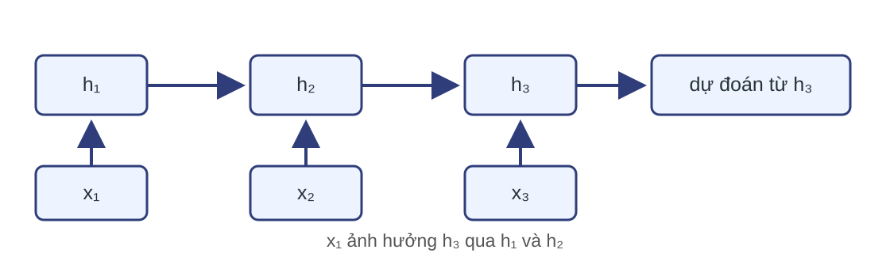
Chuỗi theo quy ước lô ở hàng
$$X\in\mathbb R^{N\times T\times D_x},\qquad X_t=\begin{bmatrix}(x_t^{(1)})^\top\\ \vdots\\(x_t^{(N)})^\top\end{bmatrix}\in\mathbb R^{N\times D_x},\quad t=1,\ldots,T.$$
$N$: số chuỗi hoặc đoạn trong lô.
$T$: số bước hợp lệ trong mỗi mẫu đã chọn.
$D_x$: số đặc trưng mỗi bước.
Phạm vi: lô đang xét có cùng $T$.
Kiểm tra về ngữ cảnh
Câu hỏi: Với $X\in\mathbb R^{32\times20\times64}$, kích thước của $X_7$ là gì? Trục nào bị chọn?
$X_7\in\mathbb R^{32\times64}$; chọn bước $t=7$, giữ trục lô và đặc trưng.
Ví dụ vô hướng ba bước
$x=(1,0,-1)$, $h_0=0$
$w_x=0{,}5$, $w_h=0{,}8$
$h_t=\tanh(w_xx_t+w_hh_{t-1})$
$o_t=1{,}2h_t$
Chỉ giám sát đầu ra cuối với mục tiêu $y=0{,}4$; không có độ lệch trong ví dụ.
Tính bước đầu của ví dụ
Từ bộ số ở trang trước, tính $a_1$ rồi cập nhật $h_1$.
$a_1=0{,}5\cdot1+0{,}8\cdot0=0{,}5$; $h_1=\tanh(0{,}5)=0{,}4621$.
Một ô RNN dùng hai nguồn thông tin
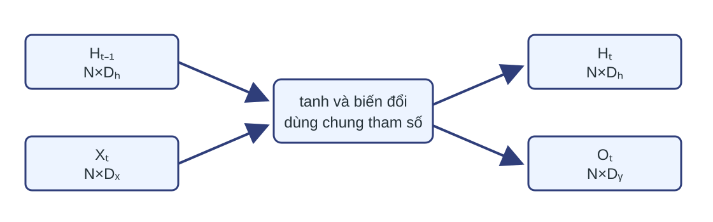
Cập nhật truy hồi theo quy ước hàng
$$A_t=X_tW_x+H_{t-1}W_h+b_h,$$ $$H_t=\tanh(A_t),\qquad O_t=H_tW_y+b_y.$$
Độ lệch được phát theo trục lô; $\tanh$ tác động theo từng phần tử.
Kích thước khóa mọi phép nhân
| Đại lượng | Kích thước |
|---|
| $X_t$ | $N\times D_x$ |
| $H_t,A_t$ | $N\times D_h$ |
| $O_t$ | $N\times D_y$ |
| $W_x,W_h,W_y$ | $D_x\times D_h$, $D_h\times D_h$, $D_h\times D_y$ |
| $b_h,b_y$ | $D_h$, $D_y$ |
Trạng thái đầu là điều kiện biên
Khởi tạo bằng 0
$H_0=0\in\mathbb R^{N\times D_h}$.
Trạng thái được cung cấp
Cùng kích thước, kiểu dữ liệu và thiết bị với phép tính.
Thiếu $H_0$ thì $H_1$ chưa xác định.
Trải mạng làm lộ tham số dùng chung
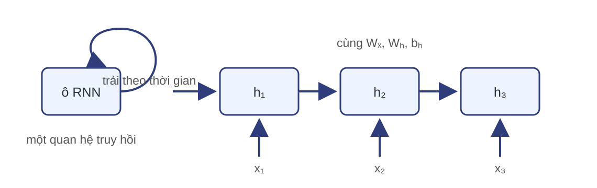
Câu hỏi: Nếu trải thành bốn bước, có bao nhiêu ma trận $W_h$ độc lập?
Chỉ một $W_h$; bốn bước là bốn lần dùng cùng tham số.
Bốn dạng ánh xạ đầu vào–đầu ra
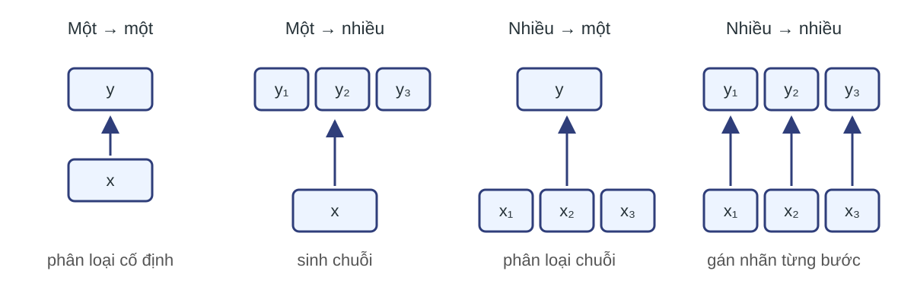
Nhiều–sang–nhiều có thể căn chỉnh từng bước hoặc không căn chỉnh về vị trí và độ dài.
Nhiều–sang–một chỉ dùng đầu ra cuối
$$\mathcal L=\frac1N\sum_{n=1}^{N}\ell\!\left(Y^{(n)},O_T^{(n)}\right),\qquad O_T\in\mathbb R^{N\times D_y}.$$
Phân lớp: $Y\in\{1,\ldots,D_y\}^{N}$; $\ell$ là entropy chéo từ logit $O_T$.
Đích liên tục: $Y\in\mathbb R^{N\times D_y}$; $\ell_n=\tfrac12\lVert Y^{(n)}-O_T^{(n)}\rVert_2^2$.
Nhiều–sang–nhiều căn chỉnh
$$\mathcal L=\frac1{NT}\sum_{n=1}^{N}\sum_{t=1}^{T}\ell\!\left(Y_t^{(n)},O_t^{(n)}\right),\qquad O\in\mathbb R^{N\times T\times D_y}.$$
Phân lớp: $p_t^{(n)}=\operatorname{softmax}(O_t^{(n)})$ theo $D_y$; $\ell=-\log p_{t,Y_t^{(n)}}^{(n)}$.
Đích liên tục: $Y\in\mathbb R^{N\times T\times D_y}$; $\ell=\tfrac12\lVert Y_t^{(n)}-O_t^{(n)}\rVert_2^2$.
Kiểm tra dạng ánh xạ
Câu hỏi: Phân loại cảm xúc của cả câu và gán nhãn từ loại cho từng từ thuộc hai dạng nào?
Phân loại cảm xúc: nhiều–sang–một. Gán nhãn từ loại: nhiều–sang–nhiều căn chỉnh.
Lan truyền xuôi đi từ 1 đến T
- Đặt $H_0$.
- Với $t=1,\ldots,T$, tính $A_t$, $H_t$, rồi $O_t$ nếu cần.
- Tạo mất mát từ các đầu ra được giám sát.
- Lưu đại lượng trung gian cần cho lan truyền ngược.
Ba bước cho ba trạng thái khác nhau
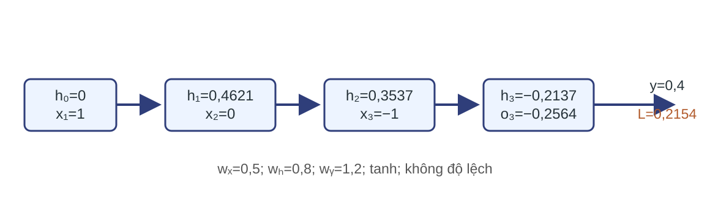
Phép tính lan truyền xuôi của ví dụ
| $t$ | $a_t$ | $h_t$ |
|---|
| 1 | $0{,}5000$ | $0{,}4621$ |
| 2 | $0{,}3697$ | $0{,}3537$ |
| 3 | $-0{,}2170$ | $-0{,}2137$ |
$$o_3=1{,}2h_3=-0{,}2564,\qquad \mathcal L=\tfrac12(o_3-0{,}4)^2=0{,}2154.$$
Kiểm tra lan truyền xuôi
Câu hỏi: Nếu đổi $x_1$ nhưng giữ $x_2,x_3$, đại lượng nào ở bước ba có thể đổi?
$h_1$, $h_2$, $h_3$, $o_3$ và mất mát đều có thể đổi vì quan hệ truy hồi truyền ảnh hưởng về phía trước.
BPTT là lan truyền ngược trên mạng đã trải
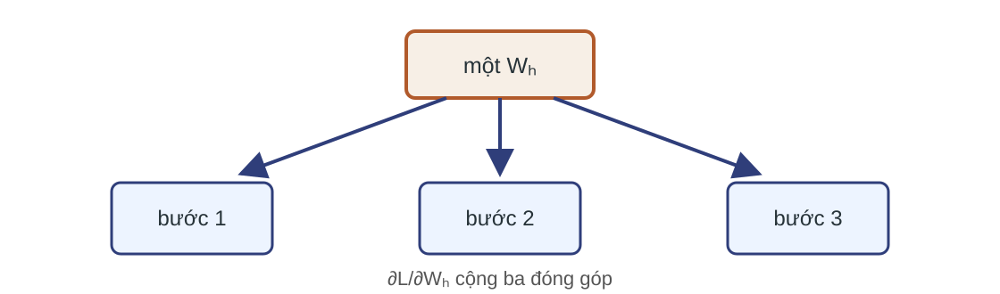
Tham số xuất hiện nhiều lần nên gradient tham số là tổng đóng góp qua thời gian.
Ví dụ: tín hiệu đi ngược qua ba bước
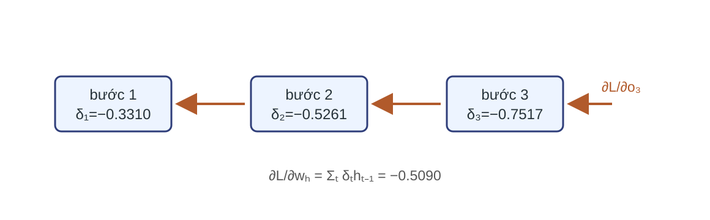
$$\bar o_3=o_3-y=-0{,}6564,\qquad \delta_3=\bar o_3w_y(1-h_3^2)=-0{,}7517.$$
Ví dụ: hai delta tiếp theo
$$\delta_2=\delta_3w_h(1-h_2^2)=-0{,}5261,$$ $$\delta_1=\delta_2w_h(1-h_1^2)=-0{,}3310.$$
BPTT đi theo thứ tự $t=3,2,1$; mỗi delta truyền tín hiệu về tiền kích hoạt của bước trước.
BPTT tổng quát đi từ $T$ về 1
$$\bar O_t:=\frac{\partial\mathcal L}{\partial O_t},\qquad \bar H_t:=\frac{\partial\mathcal L}{\partial H_t}=\bar O_tW_y^\top+G_{t+1}W_h^\top,$$ $$G_t=\bar H_t\odot(1-H_t\odot H_t),\qquad G_{T+1}=0\in\mathbb R^{N\times D_h}.$$
- Khởi tạo $G_{T+1}=0$.
- Với $t=T,T-1,\ldots,1$, tính $\bar H_t$, rồi $G_t$.
- Cộng đóng góp tham số tại bước $t$.
Đạo hàm trọng số cộng theo lô và thời gian
$$\frac{\partial\mathcal L}{\partial W_x}=\sum_{t=1}^{T}X_t^\top G_t,\qquad \frac{\partial\mathcal L}{\partial W_h}=\sum_{t=1}^{T}H_{t-1}^\top G_t,$$ $$\frac{\partial\mathcal L}{\partial W_y}=\sum_{t=1}^{T}H_t^\top\bar O_t.$$
Phép nhân ma trận cộng theo lô; tổng theo $t$ cộng các lần dùng chung trọng số.
Ví dụ: cộng đạo hàm tham số
$\partial\mathcal L/\partial w_x=0{,}4207$
$\partial\mathcal L/\partial w_h=-0{,}5090$
$\partial\mathcal L/\partial w_y=0{,}1403$
Ba gradient dùng cùng các $\delta_t$ đã tính.
$\partial\mathcal L/\partial w_h=\delta_1h_0+\delta_2h_1+\delta_3h_2$.
Đạo hàm trực tiếp bỏ qua đường qua trạng thái trước
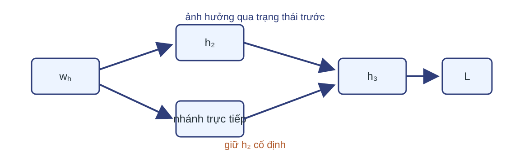
$$D_t=\frac{dh_t}{dw_h}=(1-h_t^2)\left(h_{t-1}+w_hD_{t-1}\right),\qquad D_0=0.$$
Giữ $h_2$ cố định tại bước 3 cho gradient $-0{,}2659$; đạo hàm toàn phần cho $-0{,}5090$.
Kiểm tra BPTT
Câu hỏi: Tại sao $\partial\mathcal L/\partial W_h$ là tổng theo $t$, dù chỉ có một ma trận $W_h$?
Vì cùng $W_h$ được dùng ở mọi bước; mỗi lần dùng tạo một đường phụ thuộc và một đóng góp gradient.
Đạo hàm xa là tích nhiều Jacobian
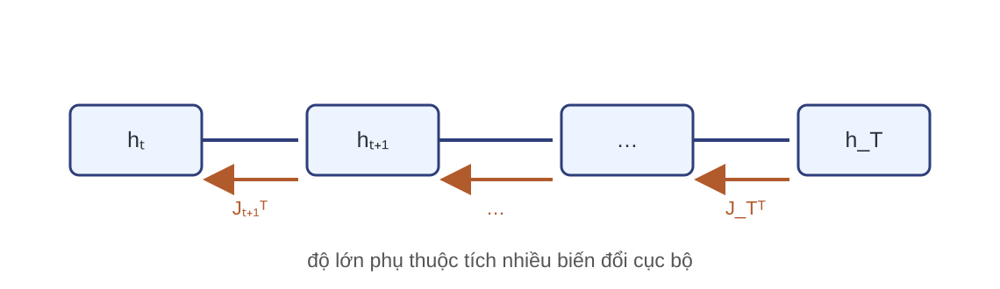
$$h_t\in\mathbb R^{1\times D_h},\quad dh_t=dh_{t-1}J_t,\quad J_t=W_h\operatorname{diag}(1-h_t\odot h_t),$$ $$\bar h_{t-1}=\bar h_tJ_t^\top.$$
Lặp phép nhân cùng loại qua nhiều bước có thể làm tích co lại hoặc giãn ra.
Ví dụ vô hướng co lại qua ba bước
Trong ví dụ, $D_h=1$ nên mỗi $J_t$ là một số.
$$\frac{\partial h_3}{\partial h_0}=\prod_{t=1}^{3}w_h(1-h_t^2)$$ $$=0{,}6292\times0{,}6999\times0{,}7635=0{,}3362.$$
Một thay đổi nhỏ ở $h_0$ chỉ còn khoảng 33,6% khi đến $h_3$.
Lặp co hoặc giãn làm đổi thang đạo hàm
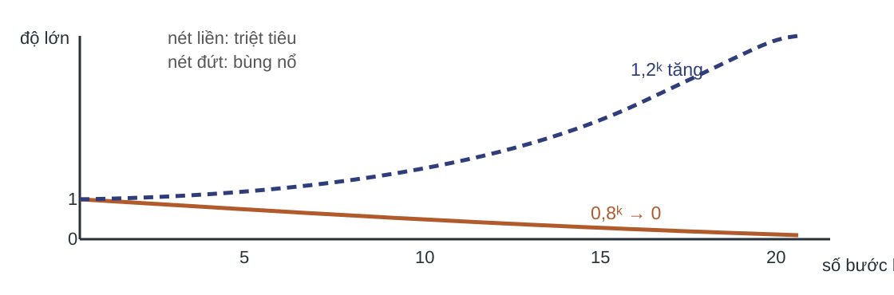
Triệt tiêu: tích chuẩn Jacobian giảm nhanh về 0.
Bùng nổ: các hướng giãn lặp lại làm tích tăng nhanh.
Phụ thuộc dài hạn cần một đường đạo hàm dài
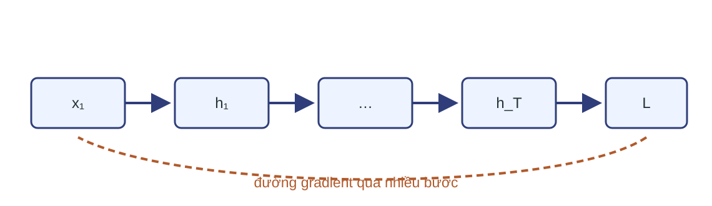
Đạo hàm triệt tiêu làm bước đầu nhận tín hiệu học quá nhỏ; đạo hàm bùng nổ làm cập nhật mất ổn định.
Kiểm tra đường đạo hàm
Câu hỏi: Nếu mỗi bước nhân độ lớn đạo hàm với $0{,}8$, sau 20 bước còn tỷ lệ bao nhiêu?
$0{,}8^{20}\approx0{,}0115$, tức khoảng 1,15%.
Mô hình ngôn ngữ phân rã xác suất chuỗi
$$p(x_1,\ldots,x_T)=p(x_1)\prod_{t=2}^{T}p(x_t\mid x_{1:t-1}).$$ $$p_\theta(x_t\mid x_{1:t-1})\approx\operatorname{softmax}(O_{t-1}).$$
Trạng thái $h_{t-1}$ tóm tắt tiền tố; đầu ra từ trạng thái này tham số hóa phân phối của ký hiệu kế tiếp.
Trục đầu ra có thể khác trục đầu vào
Cùng chỉ số thời gian
$Y_t$ ghép với $O_t$ tại mỗi bước, như gán nhãn từng từ.
Chỉ số đầu ra riêng
$Y_s$ nằm trên trục dài $T_y$, có thể khác $T$, như dịch máy.
Công thức mất mát theo $t=1,\ldots,T$ chỉ dùng được khi hai trục đã căn chỉnh.
RNN nhiều tầng thêm một trục tầng
$$H_t^{(0)}=X_t,\qquad H_t^{(\ell)}=\tanh\!\left(H_t^{(\ell-1)}W_x^{(\ell)}+H_{t-1}^{(\ell)}W_h^{(\ell)}+b_h^{(\ell)}\right),$$ $$W_x^{(\ell)}\in\mathbb R^{D_{\ell-1}\times D_\ell},\qquad W_h^{(\ell)}\in\mathbb R^{D_\ell\times D_\ell}.$$
Mỗi tầng có trạng thái và tham số riêng; tham số vẫn dùng chung theo thời gian trong cùng tầng.
RNN hai chiều dùng cả hai phía của chuỗi
Chiều thuận
$\overrightarrow H_t$ tóm tắt $x_1,\ldots,x_t$.
Chiều ngược
$\overleftarrow H_t$ tóm tắt $x_T,\ldots,x_t$.
Câu hỏi: Có thể dùng RNN hai chiều cho dự đoán trực tuyến tại $t$ không?
Không, nếu đầu vào tương lai chưa có; trục tầng không thay điều kiện nhân quả này.
Đường trạng thái cần kiểm soát tốt hơn
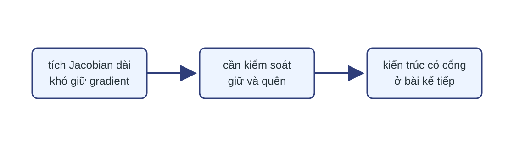
LSTM và GRU thay đổi đường cập nhật trạng thái để điều tiết thông tin và gradient qua thời gian.